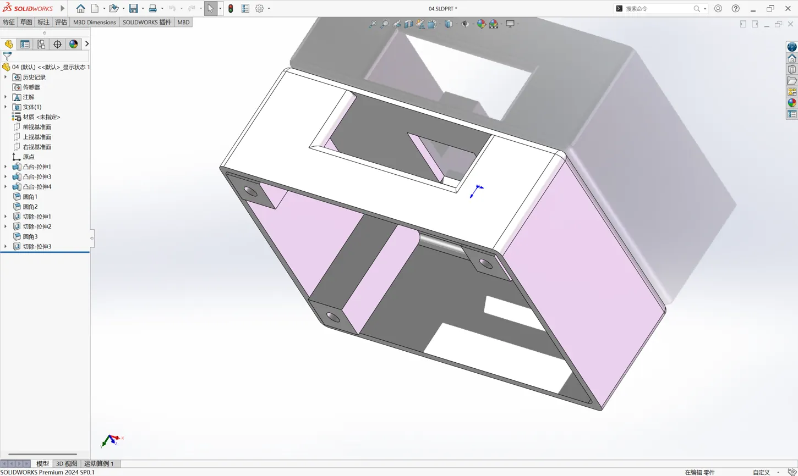
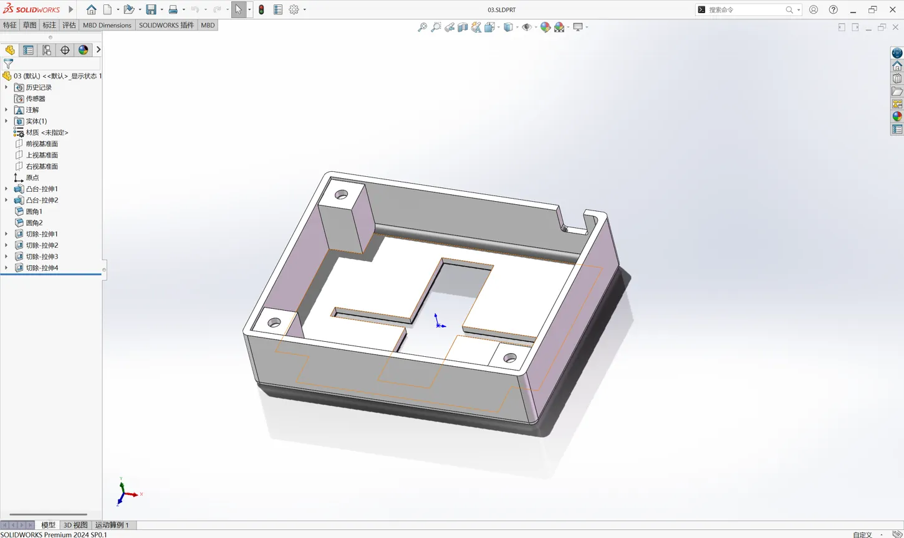
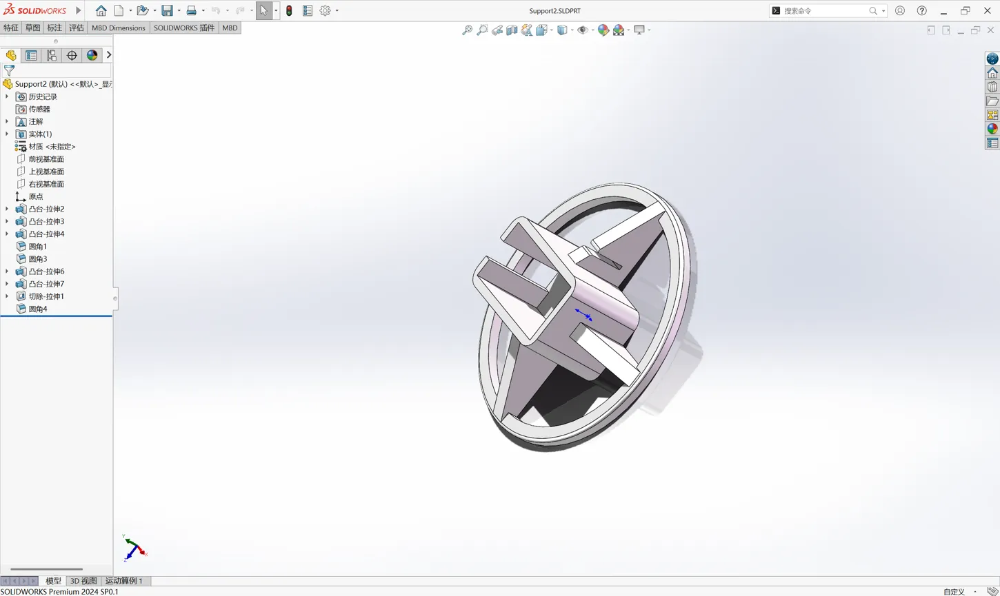
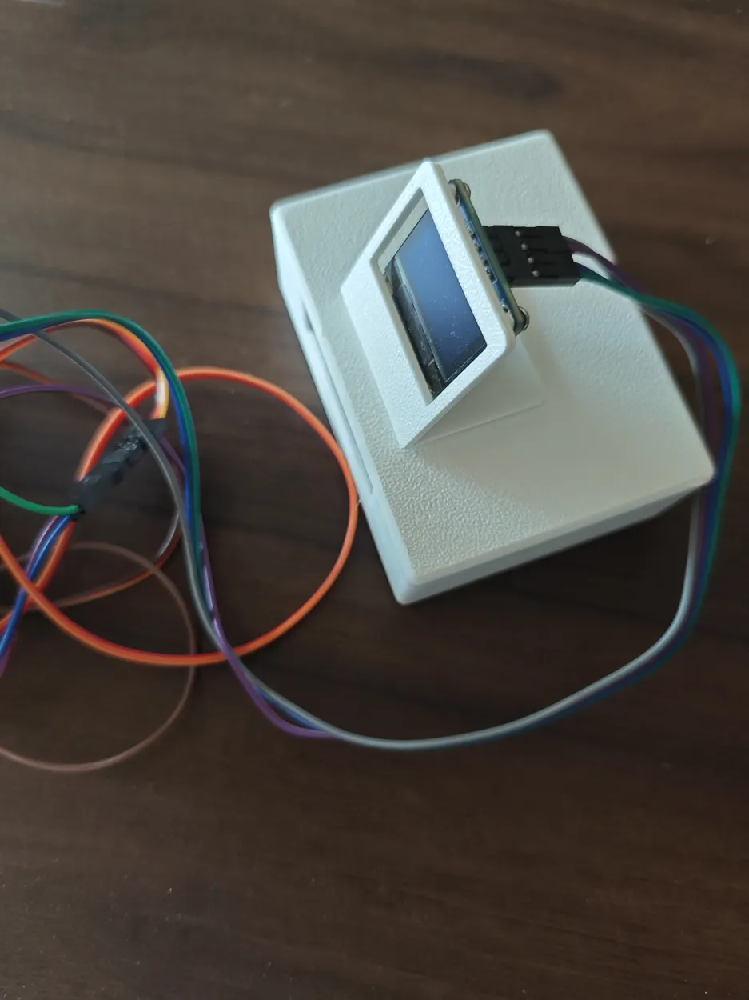
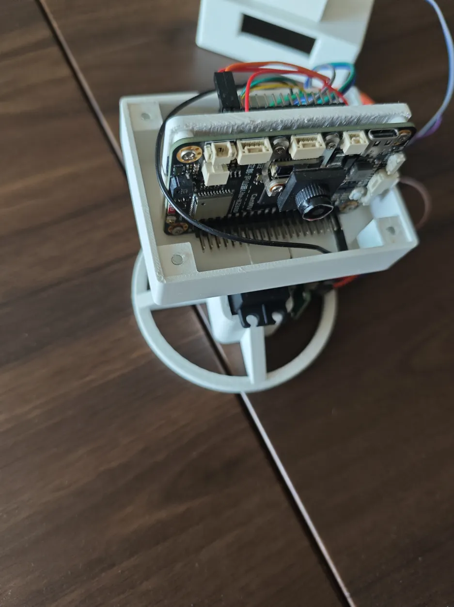
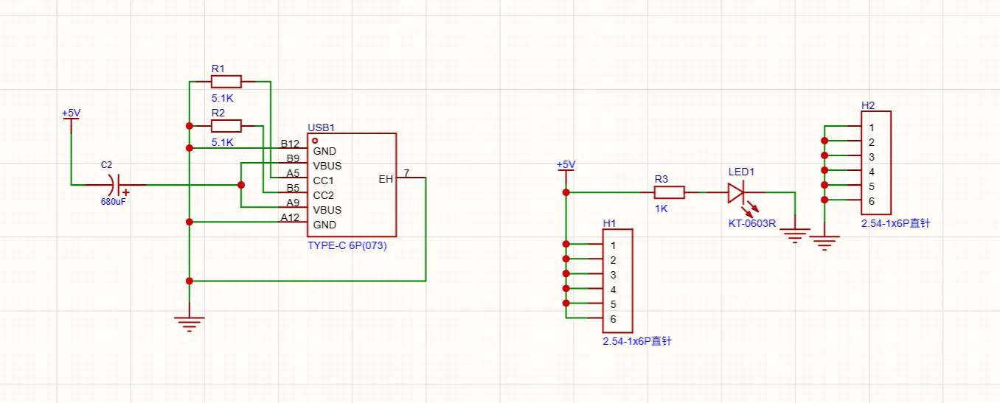

返回硬件项目索引
返回硬件项目索引自追踪手势识别控制
阅读项目文档 ↓为解决使用电脑处理文档时快捷组合键操作不便与必须接触操作的问题，构想了一个自追踪手势识别控制电脑键盘的摄像头。基于庐山派Lite完成手势识别，并和esp32串口通信实现基本信息传递，通过esp32模拟蓝牙键盘，完成对电脑基本快捷键的输入。外观即为可左右旋转的摄像头，可以主动调整位置追踪手掌，通过特定手势实现快捷键或者自定义输入的操作。








项目文档
暑期项目介绍
暑期项目介绍
项目基本信息
- 项目名称：自追踪手势识别控制
- Mentor：任子桐
项目构思
由于在使用电脑处理文档或代码时快捷组合键操作不便的问题，并且一定需要进行接触操作，所以构想了一个自追踪手势识别控制电脑键盘的项目。
在项目构思初期，预备分层完成以下任务：
分类 · 具体内容
必须做 · 1. 识别手势并对相应手势进行与按键绑定。<br>2. 与电脑手机正常连接，传输数据。<br>3. 有基本的外壳。
可以做 · 1. 增加可以主动旋转的底座，物理追踪目标（例如掌心），主动复位。<br>2. 远程操控电器。<br>3. 外观进行美化和个性化。
暂不做 · 1. 暂不做与电脑手机连接的APP，可以便捷的自定义按键。<br>2. 暂不加入语音等模块，实现桌面助手功能。
暑期第一版最低目标 · 有合适的外形和支架便于放在桌面上并调整角度，识别手势并控制电脑<br>
模块介绍
按层次依次完成以下模块：
1.在庐山派Lite上完成手势识别，并跑通和esp32的串口通信信息传递
2.esp32模拟蓝牙键盘，和电脑连接，并实现特定按键或者组合键的输入
3.esp32控制舵机，实现特定角度旋转
4.庐山派上增加手势中心与画幅中心偏移量的传输，并设计舵机补偿
5.增加OLED显示，便于后续使用、调试
项目实现
硬件选型
设计之初，希望用一块视觉识别开发板实现基本的手势识别功能，并通过串口通信与esp32连接，后者通过BLE技术模拟电脑键盘实现控制；而在追踪部分，选用舵机移动摄像头。
经过与mentor的沟通以及查阅相关资料，最终选择了庐山派Lite作为视觉识别主板，MG996R作为控制舵机。选型完成后基本放弃了图传电脑在分析的方案，直接在庐山派上实现图像分析和识别。
后续增加了一个OLED屏幕便于调试和操作。
PCB设计
由于使用庐山派开发板以及esp32，且无其他复杂电路，所以没有设计可以集成所有电路以及开发板接口的电路板，为了解决供电问题，设计了一个简单的typeC 5V供电电路，并用针脚引出+5V和地线，便于测试。
由于后续发现疑似电容过大导致的浪涌电流触发typeC接口断路的问题，尝试直接删掉保护电容，基本能正常工作？
外形设计
选用solidworks设计外观，用自攻螺丝固定开发板，完成了一个基本功能框架，之后在设计了一个外壳，通过磁吸固定在功能框架外部。
以下为外壳设计，在上方加了一个可拆卸的OLED支架。
打印与组装
用3D打印打印了框架与外壳，并成功组装并固定。
程序设计
分别在庐山派Lite以及esp32上设计了两部分程序。
在庐山派上的代码主要参考了示例文档，并使用自带的几种简单手势训练集，实现手势识别，通过串口通信，把识别到的手势以及距离屏幕中心的偏转程度传输给esp32，部分核心代码如下。
初始化 UART2，115200
uart = UART(UART.UART2, baudrate=115200, bits=UART.EIGHTBITS, parity=UART.PARITY_NONE, stop=UART.STOPBITS_ONE)
手掌检测与绘制
def run(self,input_np):
执行手掌检测
det_boxes=self.hand_det.run(input_np)
hand_rec_res=[]
hand_det_res=[]
单手跟踪：筛选有效框后只取面积最大的一个
best_box=None
best_area=0
for det_box in det_boxes:
x1, y1, x2, y2 = det_box[2],det_box[3],det_box[4],det_box[5]
w,h= int(x2 - x1),int(y2 - y1)
if (h<(0.1*self.rgb888p_size[1])):*
*continue*
*if (w<(0.25*self.rgb888p_size[0]) and ((x1<(0.03*self.rgb888p_size[0])) or (x2>(0.97*self.rgb888p_size[0])))):
continue
if (w<(0.15*self.rgb888p_size[0]) and ((x1<(0.01*self.rgb888p_size[0])) or (x2>(0.99*self.rgb888p_size[0])))):*
*continue*
*area=w*h
if area>best_area:
best_area=area
best_box=det_box
只对面积最大的手掌执行手势识别
if best_box is not None:
self.hand_rec.config_preprocess(best_box)
text=self.hand_rec.run(input_np)
hand_det_res.append(best_box)
hand_rec_res.append(text)
return hand_det_res,hand_rec_res
绘制效果，绘制识别结果和检测框
def draw_result(self,pl,hand_det_res,hand_rec_res):
pl.osd_img.clear()
if hand_det_res:
for k in range(len(hand_det_res)):
det_box=hand_det_res[k]
x1, y1, x2, y2 = det_box[2],det_box[3],det_box[4],det_box[5]
w,h= int(x2 - x1),int(y2 - y1)
w_det = int(float(x2 - x1) * self.display_size[0] // self.rgb888p_size[0])
h_det = int(float(y2 - y1) * self.display_size[1] // self.rgb888p_size[1])
x_det = int(x1*self.display_size[0] // self.rgb888p_size[0])*
*y_det = int(y1*self.display_size[1] // self.rgb888p_size[1])
pl.osd_img.draw_rectangle(x_det, y_det, w_det, h_det, color=(255, 0, 255, 0), thickness = 2)
pl.osd_img.draw_string_advanced( x_det, y_det-50, 32,hand_rec_res[k], color=(255,0, 255, 0))
串口通信部分
def send_gesture_command(cmd):
uart.write(f"C:{cmd}n")
def send_position(offset_x):
uart.write(f"P:{offset_x}n")
主程序
if name=="main":
显示模式：virt=电脑预览(通过CanMV IDE帧缓冲区显示)
可选: hdmi/lcd/lt9611/st7701/hx8399/nt35516/nt35532/gc9503/aml020t/jd9852/ili9806/virt
display_mode="virt"
显示分辨率，virt模式下可手动设置，越小传输越快
display_size=[640, 480]
AI推理分辨率，k230d可调整为[640,360]以提升速度
rgb888p_size = [640, 480]
手掌检测模型路径
hand_det_kmodel_path="/sdcard/examples/kmodel/hand_det.kmodel"
手势识别模型路径
hand_rec_kmodel_path="/sdcard/examples/kmodel/hand_reco.kmodel"
其它参数
anchors_path="/sdcard/examples/utils/prior_data_320.bin"
hand_det_input_size=[512,512]
hand_rec_input_size=[224,224]
confidence_threshold=0.2
nms_threshold=0.5
labels=["gun","other","yeah","five"]
anchors = [26,27, 53,52, 75,71, 80,99, 106,82, 99,134, 140,113, 161,172, 245,276]
try:
初始化PipeLine，rgb888p_size为传给AI的图像分辨率，display_size为显示分辨率
pl=PipeLine(rgb888p_size=rgb888p_size,display_mode=display_mode, display_size=display_size)
创建PipeLine，可按需传入sensor_id选择摄像头，例如pl.create(sensor_id=2)
pl.create()
display_size=pl.get_display_size()
print("手势识别程序已启动，请在IDE的'帧缓冲区'面板查看画面。")
hr=HandRecognition(hand_det_kmodel_path,hand_rec_kmodel_path,det_input_size=hand_det_input_size,kp_input_size=hand_rec_input_size,labels=labels,anchors=anchors,confidence_threshold=confidence_threshold,nms_threshold=nms_threshold,nms_option=False,strides=[8,16,32],rgb888p_size=rgb888p_size,display_size=display_size)
gesture = "other"
lastgesture = "other"
center_x = rgb888p_size[0] // 2 # 画面中心 x（640/2=320）
while True:
with ScopedTiming("total",1):
img=pl.get_frame() # 获取当前帧
hand_det_res,hand_rec_res=hr.run(img) # 推理当前帧
位置补偿：计算手掌中心x偏差并发送给ESP32
if hand_det_res:
det_box=hand_det_res[0]
cx=(det_box[2]+det_box[4])//2
offset_x=int(cx-center_x)
send_position(offset_x)
else:
send_position(0)
for text in hand_rec_res:
text 格式: " yeah: 0.95"
parts = text.strip().split(":")
gesture = parts[0].strip()
confidence = float(parts[1])
只在置信度较高时触发
if confidence > 0.6:
if gesture == "five" and lastgesture == "other":
send_gesture_command(1)
time.sleep_ms(500)
elif gesture == "yeah" and lastgesture == "other":
send_gesture_command(2)
time.sleep_ms(500)
lastgesture = gesture
hr.draw_result(pl,hand_det_res,hand_rec_res) # 绘制推理结果
pl.show_image() # 展示推理结果
gc.collect()
对于esp32，主要实现接收数据，并通过BLE模拟电脑蓝牙键盘，执行特定组合键。控制舵机，参考偏移量，进行主动追踪。调用了github上写好的BLE键盘库，主要代码如下。
include "BleKeyboard.h"
include <Servo.h>
Servo myServo;
//BleKeyboard bleKeyboard;
BleKeyboard bleKeyboard("MyKeyboard", "RXY", 100);
String inputstring = "";
// 舵机补偿参数
const int SERVO_PIN = 5;
const int SERVO_US_MIN = 500;
const int SERVO_US_MAX = 2500;
const int DEAD_ZONE = 80;
const float STEP_GAIN = 0.1;
const int STEP_MAX = 30;
int angle = 1500;
include<SPI.h>
include<Wire.h>
include<Adafruit_GFX.h>
include<Adafruit_SSD1306.h>
define SCREEN_WIDTH 128
define SCREEN_HEIGHT 64
define OLED_RESET -1
define SCREEM_ADDRESS 0x3c
Adafruit_SSD1306 OLED(SCREEN_WIDTH,SCREEN_HEIGHT,&Wire,OLED_RESET);
define SDA_PIN 23
define SCL_PIN 22
char str1[] = "Initializing";
char str2[] = "Copying";
char str3[] = "Pasting";
char str4[] = "Waiting";
void centerText(const char *s) {
OLED.clearDisplay();
OLED.setTextSize(1.5);
int16_t x1, y1;
uint16_t w, h;
OLED.getTextBounds(s, 0, 0, &x1, &y1, &w, &h);
OLED.setCursor((SCREEN_WIDTH - w) / 2, (SCREEN_HEIGHT - h) / 2);
OLED.setTextColor(SSD1306_WHITE);
OLED.print(s);
OLED.display();
}
void setup() {
myServo.attach(SERVO_PIN);
Serial.begin(115200);
Serial2.begin(115200, SERIAL_8N1, 16, 17); // 波特率115200, RX=16, TX=17
bleKeyboard.begin();
myServo.write(90);
Wire.begin(SDA_PIN, SCL_PIN);
OLED.begin(SSD1306_SWITCHCAPVCC,SCREEM_ADDRESS);
OLED.clearDisplay();
centerText(str1);
delay(2000);
OLED.clearDisplay();
centerText(str4);
}
// 处理手势命令 C:cmd
void handleGesture(const String &cmd) {
if (cmd == "1") {
centerText(str2);
OLED.display();
bleKeyboard.press(KEY_LEFT_CTRL);
delay(10);
bleKeyboard.press('c');
delay(50);
bleKeyboard.releaseAll();
delay(1000);
OLED.clearDisplay();
centerText(str4);
} else if (cmd == "2") {
centerText(str3);
OLED.display();
bleKeyboard.press(KEY_LEFT_CTRL);
delay(10);
bleKeyboard.press('v');
delay(50);
bleKeyboard.releaseAll();
delay(1000);
OLED.clearDisplay();
centerText(str4);
}
}
// 舵机补偿 P:offset_x
void handleServoCompensation(float offset_x) {
float absOff = fabs(offset_x);
if (absOff < DEAD_ZONE) return;
int step = (int)((absOff - DEAD_ZONE) * STEP_GAIN);
step = constrain(step, 1, STEP_MAX);
if (offset_x < 0) {
angle += step; // 偏负向：增大脉宽
} else {
angle -= step; // 偏正向：减小脉宽
}
angle = constrain(angle, SERVO_US_MIN, SERVO_US_MAX);
myServo.writeMicroseconds(angle);
}
// 解析一行串口指令
void processCommand(String line) {
line.trim();
if (line.length() < 2) return;
if (line.startsWith("C:")) {
String cmd = line.substring(2);
cmd.trim();
handleGesture(cmd);
} else if (line.startsWith("P:")) {
String offsetStr = line.substring(2);
offsetStr.trim();
handleServoCompensation(offsetStr.toFloat());
}
}
void loop() {
if(bleKeyboard.isConnected()) {
if (Serial2.available()) {
char c = Serial2.read();
if (c == 'n') {
processCommand(inputstring);
inputstring = "";
} else if (c != 'r') {
inputstring += c;
}
}
delay(10);
}
}
AI使用情况说明
1.选型时，在和mentor讨论后，综合AI提供的相关分析与建议，完成开发板以及舵机选型
2.完成庐山派Lite视觉识别代码时，采用canmv的示例代码，通过AI辅助完成了大段代码的理解，并完成了单一手势识别、识别手势中心偏移量等拓展功能的实现
3.在esp32部分，使用AI辅助分块完成了控制舵机旋转特定角度代码、BLE模拟键盘代码、串口通信代码，写成相应的函数，便于后续主程序的编写与功能调用